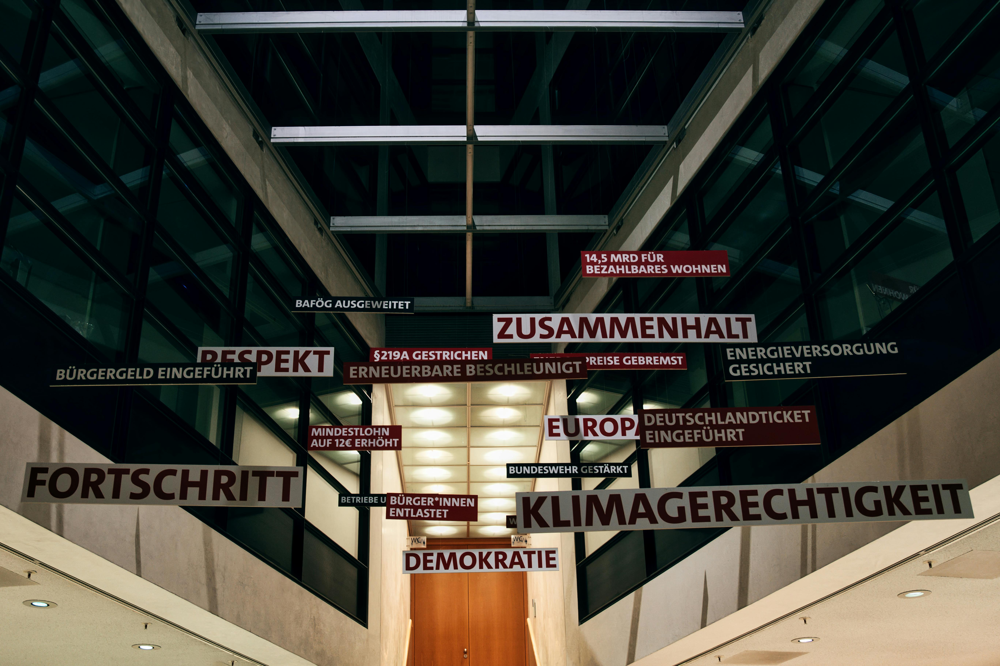

Continental Breakfast
Welcome to the Continental Breakfast homepage. Explore the continents through the navigation menu above.
Welcome to the Continental Breakfast homepage. Explore the continents through the navigation menu above.
Europe's cultural heritage is a rich and diverse blend of natural, built, and archaeological sites, as well as museums, monuments, artworks, historic cities, and various forms of creative expression, such as literature, music, and audiovisual works. Additionally, Europe’s cultural heritage plays a vital role in revitalizing urban and rural areas and supporting sustainable tourism.
Select a dropdown below to learn more about Europe's Culture!
European cultural groups are diverse and complex, with over 160 distinct groups across the continent. These groups are often characterized by language, religion, and historical differences, which create a sense of self-recognition among their members. While some groups are concentrated in specific territorial homelands, such as the Catalans and Galicians in Spain, others, like the Serbs, Bosniaks, and Croats in the Balkans, share a common language but maintain distinct identities due to religious and historical differences. In some cases, even within the same language or religion, groups can have strong separations, as seen with the Walloons in Belgium and the Jurassiens in Switzerland, who speak French but have developed separate identities.
The foundation of many European cultural identities lies in language, with each group often possessing a distinctive dialect or language. In the Balkans, for instance, linguistic differences are accompanied by religious distinctions, and people who share a language, like Serbs and Croats, consider their language a unique marker of identity. Similarly, the Czechs and Slovaks, despite speaking the same language, maintained separate identities due to their historical ties to different empires, which eventually led to the peaceful division of Czechoslovakia in 1993. Such cultural divisions highlight how language, history, and religion contribute to the formation of distinct cultural groups in Europe.

European cultural groups are often categorized into 21 ethnographic culture areas based on linguistic and territorial similarities. While groups within these culture areas may share certain cultural characteristics, they may not necessarily recognize their shared affinities, particularly in regions like the Balkans. In contrast, groups in regions such as Scandinavia and German-speaking Europe often have a more pronounced awareness of belonging to broader cultural civilizations. The cultural boundaries of Europe have evolved over time, with historical and political shifts, such as the Cold War divisions and the expansion of the European Union, influencing how these groups interact and perceive each other on a larger scale.
European languages are primarily categorized into three major divisions: Romance, Germanic, and Slavic, all of which stem from the Indo-European language family. The Romance languages dominate much of western and Mediterranean Europe, with major languages including French, Spanish, Portuguese, Italian, and Romanian. These languages are derived from Latin, the language of the Roman Empire. Smaller Romance languages such as Occitan in southern France and Catalan in northeastern Spain further contribute to the linguistic diversity of the region. Romance languages have historically influenced the culture and communication of much of Europe, shaping its literature, philosophy, and societal norms.
The Germanic language family is prominent in central, northern, and northwestern Europe, including languages such as German, Dutch, Danish, Norwegian, Swedish, and Icelandic. These languages originated from a common tribal language in southern Scandinavia. English, a widely spoken Germanic language, is unique in that about half of its vocabulary has Romance origins, due to historical influences from Latin and French. Additionally, minor Germanic languages such as Frisian are spoken in parts of the Netherlands and Germany. The Germanic linguistic influence extends beyond Europe, contributing significantly to global communication, especially through English.
The Slavic languages are widespread in eastern and southeastern Europe, including Russia, and are categorized into three main branches: West Slavic, East Slavic, and South Slavic. West Slavic languages, such as Polish, Czech, and Slovak, are spoken primarily in central Europe, while East Slavic languages like Russian, Ukrainian, and Belarusian dominate the vast territories of Russia and its neighboring countries. South Slavic languages, including Slovene, Serbo-Croatian, and Bulgarian, are spoken in the Balkan region. These languages reflect the historical and political divisions in Eastern Europe and are key to understanding the cultural and national identities of the region's peoples.
Europe's religious culture is shaped by a deep history of faith traditions and divisions that continue to influence its societies today. Christianity dominates the religious landscape, with most Europeans adhering to one of three main branches: Roman Catholicism, Protestantism, and Eastern Orthodoxy. These divisions stem from historic schisms in Christianity’s evolution. Roman Catholicism is prevalent in the western and southwestern parts of the continent, while Protestantism is dominant in the north, and Eastern Orthodoxy is most common in the east and southeast. The first major split occurred in the 4th century when the Roman Empire divided into western and eastern segments, a division that formalized religious leadership between the bishop of Rome and the patriarch of Constantinople. The second significant schism arose in the 16th century with the Protestant Reformation, initiated by Martin Luther, leading to the spread of Protestantism in Germanic-speaking regions such as Britain, northern Germany, Scandinavia, and the Baltic states.
Judaism has had a presence in Europe since Roman times, making it one of the oldest continuous religious communities on the continent. Over the centuries, Jewish communities migrated extensively, forming two distinct cultural branches: the Ashkenazi, concentrated in central and eastern Europe, and the Sephardi, primarily in the Iberian Peninsula. However, the Jewish population in Europe drastically declined due to the Holocaust and subsequent emigration, particularly from eastern Europe, where Jews had once formed significant minority populations. Today, Jewish communities are primarily found in urban centers, where they continue to contribute to the cultural and religious diversity of Europe.

Islam also has a significant historical and contemporary presence in Europe. Early Islamic influence was established during the Middle Ages through incursions into the Iberian and Balkan peninsulas, shaping the cultures of these regions. Today, Muslim communities are found in the Balkans, including Albania, Bosnia and Herzegovina, and northeastern Bulgaria, as well as in European Russia, where Kazan Tatars and Bashkirs represent prominent Muslim groups. In the 20th century, the in-migration of workers from Asia, North Africa, Turkey, and the former Yugoslavia led to the growth of Muslim populations in western European cities, making Islam an integral part of Europe's diverse religious fabric.